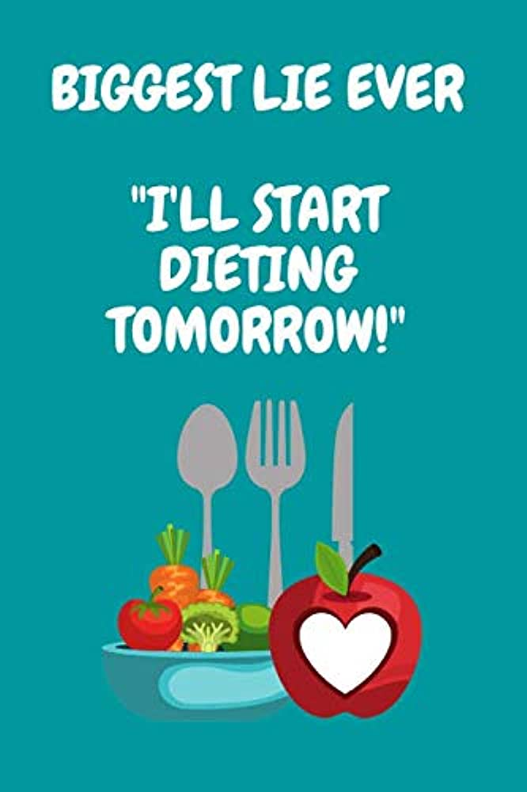

 Tired of the up and down of yo yo diets? Learn how to develop a exercise routine easy to maintain..Have healthy eating plans left you feeling defeated? Based on her bestseller Made to Crave, Lysa TerKeurst offers a new perspective to all those stuck in the cycle of losing weight and then gaining it back, equipping you with the deeper spiritual and emotional motivation you need to make lasting changes. So often we characterize our food cravings as bad, especially when dieting has made us feel even more disappointed and discouraged. But the reality is we were made to crave. We just need to realize God created us to crave more of Him instead of misplacing that craving by overindulging in physical pleasures and unhealthy choices that will never truly satisfy..